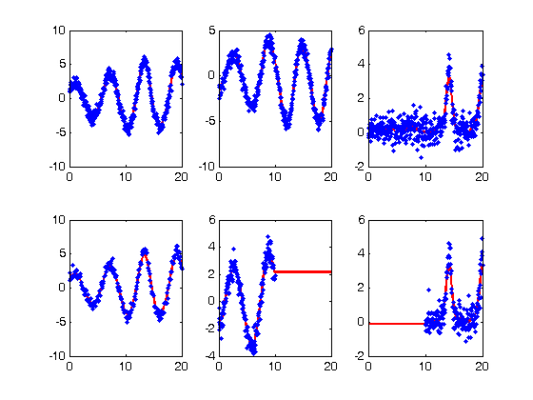
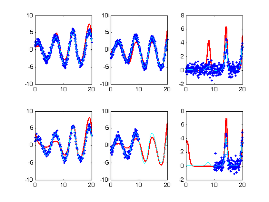
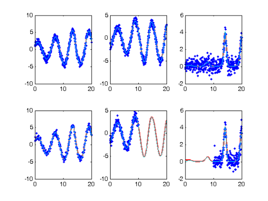

Profile Estimation Experiments
Contents
RHS Functions
odefn = @rossfunode;
fn.fn = @rossfun;
fn.dfdx = @rossdfdx;
fn.dfdp = @rossdfdp;
fn.d2fdx2 = @rossd2fdx2;
fn.d2fdxdp = @rossd2fdxdp;
fn.d2fdp2 = @rossd2fdp2;
fn.d3fdx3 = @rossd3fdx3;
fn.d3fdx2dp = @rossd3fdx2dp;
fn.d3fdxdp2 = @rossd3fdxdp2;
Observation times
tspan = 0:0.05:20;
tfine = 0:0.05:20;
obs_pts = {1:401, 1:401, 1:401;
1:2:401, 1:201, 201:401};
y0 = [1.13293; -1.74953; 0.02207];
y0 = repmat(y0',2,1);
parind = 1:3;
parind = repmat(parind,size(y0,1),1);
Other parameters
pars = [0.2; 0.2; 3];
sigma = 0.5;
jitter = 0.2;
Fitting parameters
lambdas = 1000;
lambda0 = 1;
wts = [];
nknots = 401;
nquad = 5;
norder = 3;
Profiling optimisation control
maxit1 = 100;
maxit0 = 100;
lsopts_out = optimset('DerivativeCheck','off','Jacobian','on',...
'Display','iter','MaxIter',maxit0,'TolFun',1e-8,'TolX',1e-10);
lsopts_other = optimset('DerivativeCheck','off','Jacobian','on',...
'Display','off','MaxIter',maxit0,'TolFun',1e-14,'TolX',1e-14,...
'JacobMult',@SparseJMfun);
lsopts_in = optimset('DerivativeCheck','off','Jacobian','on',...
'Display','off','MaxIter',maxit1,'TolFun',1e-14,'TolX',1e-14,...
'JacobMult',@SparseJMfun);
First create a trajectory
odeopts = odeset('RelTol',1e-13);
for i = 1:size(y0,1)
[full_time(:,i),full_path(:,:,i)] = ode45(odefn,tspan,y0(i,:),odeopts,pars);
[plot_time(:,i),plot_path(:,:,i)] = ode45(odefn,tfine,y0(i,:),odeopts,pars);
end
Tcell = cell(size(y0));
path = cell(size(y0));
for i = 1:size(obs_pts,1)
for j = 1:size(obs_pts,2)
Tcell{i,j} = full_time(obs_pts{i,j},i);
path{i,j} = full_path(obs_pts{i,j},j,i);
end
end
Ycell = path;
for i = 1:size(path,1)
for j = 1:size(path,2)
Ycell{i,j} = path{i,j} + sigma*randn(size(path{i,j}));
end
end
Setting up functional data objects
range = zeros(2,2);
knots_cell = cell(size(path));
for i = 1:size(path,1)
range(i,:) = [min(full_time(:,i)),max(full_time(:,i))];
knots_cell(i,:) = {linspace(range(i,1),range(i,2),nknots)};
end
basis_cell = cell(size(path));
Lfd_cell = cell(size(path));
nbasis = zeros(size(path));
bigknots = cell(size(path,1),1);
bigknots(:) = {[]};
quadvals = bigknots;
for i = 1:size(path,1)
for j = 1:size(path,2)
bigknots{i} = [bigknots{i} knots_cell{i,j}];
nbasis(i,j) = length(knots_cell{i,j}) + norder -2;
end
quadvals{i} = MakeQuadPoints(bigknots{i},nquad);
end
for i = 1:size(path,1)
for j = 1:size(path,2)
basis_cell{i,j} = MakeBasis(range(i,:),nbasis(i,j),norder,...
knots_cell{i,j},quadvals{i},1);
Lfd_cell{i,j} = fdPar(basis_cell{i,j},1,lambda0);
end
end
Smooth the data
DEfd = smoothfd_cell(Ycell,Tcell,Lfd_cell);
coefs = getcellcoefs(DEfd);
devals = eval_fdcell(tfine,DEfd,0);
for i = 1:size(path,1)
for j = 1:size(path,2)
subplot(size(path,1),size(path,2),(i-1)*size(path,2)+j)
plot(tfine,devals{i,j},'r','LineWidth',2);
hold on;
plot(Tcell{i,j},Ycell{i,j},'b.');
hold off;
end
end
startpars = pars + jitter*randn(length(pars),1);
disp(startpars)
0.5512
-0.0758
2.7100

Re-smoothing with model-based penalty
lambda = lambdas*ones(size(Ycell));
if isempty(wts)
wts = zeros(size(path));
for i = 1:numel(Ycell)
if ~isempty(Ycell{i})
wts(i) = 1./sqrt(var(Ycell{i}));
end
end
end
[newcoefs,resnorm2] = lsqnonlin(@SplineCoefErr_rep,coefs,[],[],...
lsopts_other,basis_cell,Ycell,Tcell,wts,lambda,fn,[],startpars,parind);
tDEfd = Make_fdcell(newcoefs,basis_cell);
devals = eval_fdcell(tfine,tDEfd,0);
for i = 1:size(path,1)
for j = 1:size(path,2)
subplot(size(path,1),size(path,2),(i-1)*size(path,2)+j)
plot(tfine,devals{i,j},'r','LineWidth',2);
hold on;
plot(Tcell{i,j},Ycell{i,j},'b.');
plot(plot_time,plot_path(:,j,i),'c');
hold off
end
end

Perform the Profiled Estimation
[newpars,newDEfd_cell] = Profile_GausNewt_rep(startpars,lsopts_out,parind,...
DEfd,fn,lambda,Ycell,Tcell,wts,[],lsopts_in);
disp(newpars);
Iteration steps Residual Improvement Grad-norm parameters
1 1 705.665 0.439788 415 0.11709 0.56071 2.6582
2 1 265.567 0.623664 129 0.22341 0.21112 2.7689
3 1 246.678 0.0711267 8.13 0.19652 0.19984 2.9816
4 1 246.6 0.0003149 0.0127 0.19834 0.19658 2.981
5 1 246.6 2.55662e-007 0.00201 0.19832 0.19627 2.9803
6 1 246.6 1.07281e-009 0.000135 0.19832 0.19625 2.9802
0.1983
0.1963
2.9802
Plot Smooth with Profile-Estimated Parameters
devals = eval_fdcell(tfine,newDEfd_cell,0);
for i = 1:size(path,1)
for j = 1:size(path,2)
subplot(size(path,1),size(path,2),(i-1)*size(path,2)+j)
plot(tfine,devals{i,j},'r','LineWidth',2);
hold on;
plot(Tcell{i,j},Ycell{i,j},'b.');
plot(plot_time,plot_path(:,j,i),'c');
hold off
end
end

Comparison with Smooth Using True Parameters
coefs = getcellcoefs(DEfd);
[truecoefs,resnorm4] = lsqnonlin(@SplineCoefErr_rep,coefs,[],[],...
lsopts_other,basis_cell,Ycell,Tcell,wts,lambda,fn,[],pars,parind);
trueDEfd_cell = Make_fdcell(truecoefs,basis_cell);
devals = eval_fdcell(tfine,trueDEfd_cell,0);
for i = 1:size(path,1)
for j = 1:size(path,2)
subplot(size(path,1),size(path,2),(i-1)*size(path,2)+j)
plot(tfine,devals{i,j},'r','LineWidth',2);
hold on;
plot(Tcell{i,j},Ycell{i,j},'b.');
plot(plot_time,plot_path(:,j,i),'c');
hold off
end
end
Squared Error Performance
newpreds = eval_fdcell(Tcell,newDEfd_cell,0);
new_err = cell(size(newpreds));
for i = 1:numel(path)
if ~isempty(newpreds{i})
new_err{i} = wts(i)*(newpreds{i} - Ycell{i}).^2;
end
end
new_err = mean(cell2mat(reshape(new_err,numel(new_err),1)));
truepreds = eval_fdcell(Tcell,trueDEfd_cell,0);
true_err = cell(size(truepreds));
for i = 1:numel(path)
if ~isempty(truepreds{i})
true_err{i} = wts(i)*(truepreds{i} - Ycell{i}).^2;
end
end
true_err = mean(cell2mat(reshape(true_err,numel(true_err),1)));
disp([new_err true_err]);
0.1365 0.1366
Calculate a Sample Information Matrix
d2Jdp2 = make_d2jdp2_rep(newDEfd_cell,fn,Ycell,Tcell,lambda,newpars,...
parind,[],wts);
d2JdpdY = make_d2jdpdy_rep(newDEfd_cell,fn,Ycell,Tcell,lambda,newpars,...
parind,[],wts);
dpdY = -d2Jdp2\d2JdpdY;
S = make_sigma(DEfd,Tcell,Ycell,0);
Cov = dpdY*S*dpdY';
StdDev = sqrt(diag(Cov));
Corr = Cov./(StdDev*StdDev');
disp('Approximate covariance matrix for parameters:')
disp(num2str(Cov))
disp('Approximate standard errors of parameters:')
disp(num2str(StdDev'))
disp('Approximate correlation matrix for parameters:')
disp(num2str(Corr))
Approximate covariance matrix for parameters:
9.1968e-006 3.408e-005 0.00010678
3.408e-005 0.00024914 0.0007058
0.00010678 0.0007058 0.0026202
Approximate standard errors of parameters:
0.0030326 0.015784 0.051188
Approximate correlation matrix for parameters:
1 0.71197 0.68786
0.71197 1 0.87355
0.68786 0.87355 1